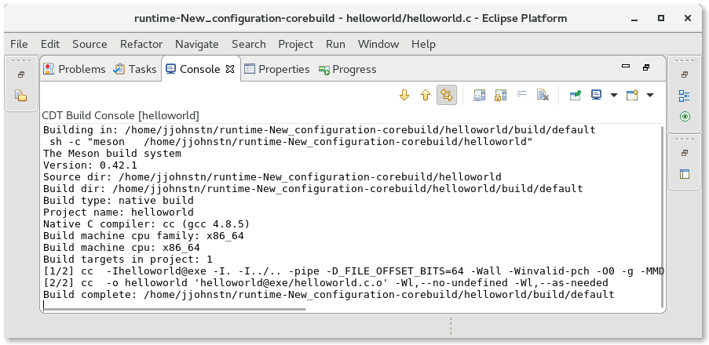
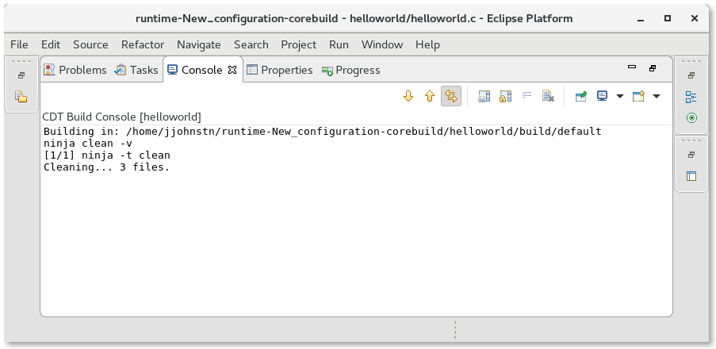
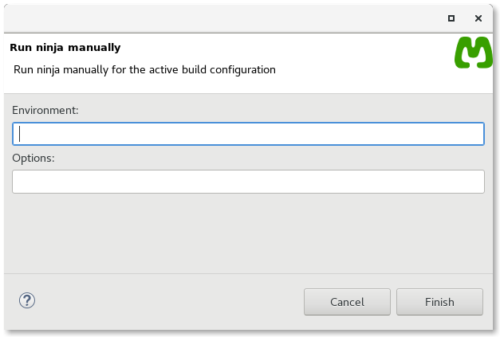

| Building | ||
|---|---|---|
|
|
|
|
| Configuration | Updating This Document | |
There are a number of ways to build the Meson project.
Using the Launch bar, just hit the hammer:
 icon and the project will be built appropriately for the launch type. If the project is unconfigured, any options specified in the Property Page are used to run the meson command. Otherwise, just the buildtype is defaulted according to the launch target in the Launch bar (run = release, debug = debug).
icon and the project will be built appropriately for the launch type. If the project is unconfigured, any options specified in the Property Page are used to run the meson command. Otherwise, just the buildtype is defaulted according to the launch target in the Launch bar (run = release, debug = debug).
If any errors occur during the meson stage, they are reported and the build is stopped. Otherwise, the ninja command is run and the results output to the build console.

The build can also be started using the Eclipse hammer:
icon or via Project -> Build.
Cleaning the project is done using Project -> Clean. The clean operation performs a meson clean command for the active configuration.

If the user needs to build a different target (e.g. install) or specify environment variables to ninja, then they must use the Run ninja context menu item that is available when right-clicking on a project or file in the project in the Project Explorer View. This brings up the Run Ninja dialog.

|
|

|
|
| Configuration | Updating This Document |